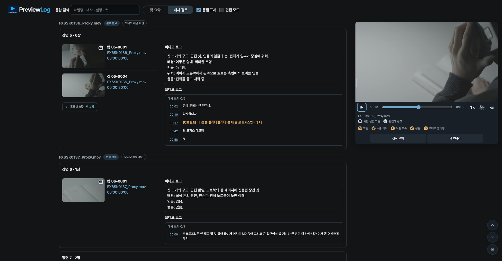
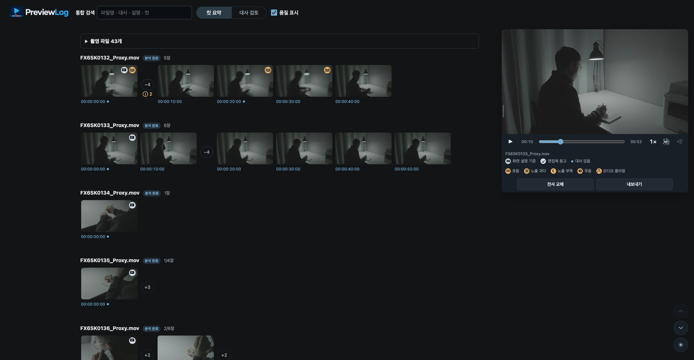
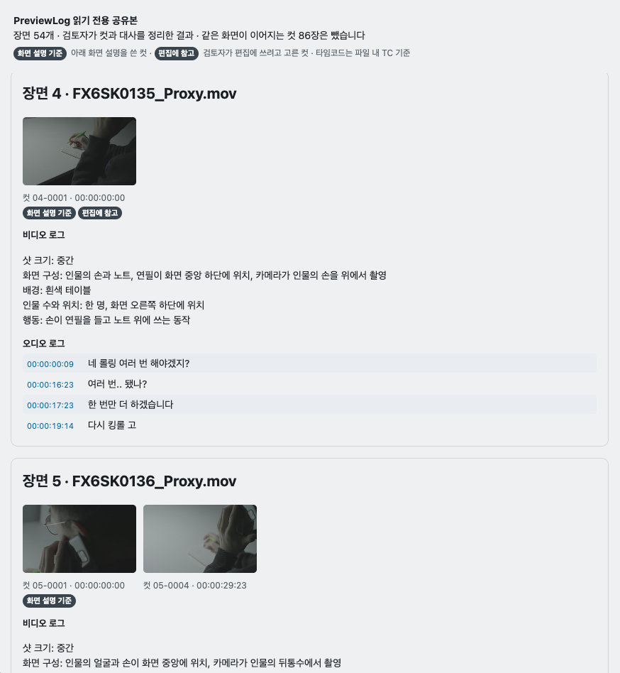
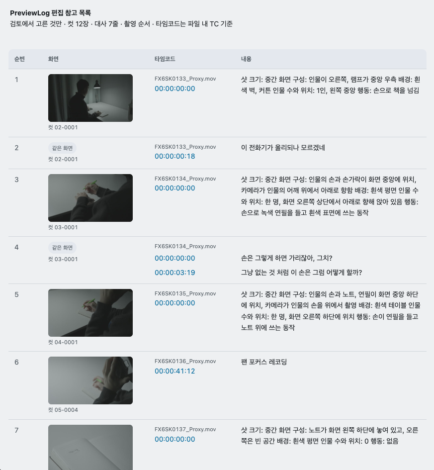

브라우저로 함께 검토
앱 설치 없이 확인하는 공유본. 촬영본을 한눈에 파악하고 모든 대사를 검토할 수 있습니다.
macOS · Apple Silicon · 출시 준비 중
대표 컷과 한국어 화면 설명·대사를 자동으로 정리합니다.
대사로
필요한 구간을 찾고, 검토한 내용을 프리뷰 자료로 공유하세요.
출시 후 14일 무료 체험 · 카드 등록 없이 · 자동 결제 없음


01 / SHARE THE REVIEW
검토한 컷과 대사를 HTML 한 파일로 전달하세요. 감독·PD·클라이언트는 브라우저에서 읽기 전용으로 확인할 수 있습니다.


앱 설치 없이 확인하는 공유본. 촬영본을 한눈에 파악하고 모든 대사를 검토할 수 있습니다.
검토하며 고른 컷과 대사를 편집 참고 목록으로 내보냅니다.
촬영 파일별 자막과 편집 참고용 마커를 제공합니다. Premiere·DaVinci Resolve 공통 자막은 SRT를 권장합니다.
형식별 호환성 확인 ↗02 / YOUR REVIEW WORKFLOW
조연출·프리뷰 작가부터 인터뷰·다큐 제작팀까지. 촬영본을 검토하고 편집자에게 전달하는 작업을 한 흐름으로 연결합니다.
장면 변화를 감지해 대표 컷을 모으고, 비슷한 화면은 묶습니다. 컷 요약과 대사 검토 중 작업에 맞는 보기를 선택하세요.
파일명·대사·설명·컷 번호를 함께 검색합니다. 대사를 클릭해 해당 구간을 재생하고, 컷과 텍스트를 수정하세요.
흐림·노출 과다·노출 부족·무음·오디오 클리핑 경고를 확인하세요. 품질 표시를 필요할 때 켜고, 검토를 마친 내용만 전달합니다.
다채널 오디오목소리가 담긴 채널을 반영하고 완전히 무음인 채널은 제외합니다. 특정 채널만 다시 전사할 수도 있습니다.
클로바노트 전사 교체전사 파일을 교체해 발화자를 구분하고, 필요하면 이전 상태로 되돌립니다.
수정과 되돌리기컷 추가·숨김·삭제·순서 변경과 대사 수정을 지원합니다. 편집 모드에서 되돌리기·다시 실행·저장을 사용할 수 있습니다.
03 / LOCAL BY DEFAULT
영상 분석은 사용자 컴퓨터에서 이루어집니다. 민감한 촬영본을 분석 서버에 업로드하지 않습니다.
최초 활성화·모델 다운로드·업데이트·기기 확인에는 인터넷이 필요합니다.
04 / TRY IT WITH YOUR FOOTAGE
출시 후 14일 동안 모든 기능을 체험하세요. 결제 수단 등록 없이 시작하고, 체험이 끝나도 자동으로 결제되지 않습니다.
모든 기능 사용 · 카드 등록 없이
체험 종료 후 자동 결제 없음
공급가 120,000원 + VAT 10%
글로벌 USD 100/년 · 국가별 부가세 별도
BEFORE YOU START
네. 전사, 화면 설명, 품질 경고는 검토를 돕는 보조 결과입니다. 중요한 컷과 대사를 영상으로 확인하고 필요한 내용을 수정하세요.
Premiere Pro와 DaVinci Resolve 공통 자막 형식은 SRT를 권장합니다. VTT는 지원하는 프로그램에서 사용하세요. CSV 마커 가져오기는 프로그램 버전과 형식에 따라 외부 도구가 필요할 수 있으며, 타임코드 참고 목록으로도 사용할 수 있습니다. 자세한 호환성 안내
기본 분석은 내 컴퓨터에서 수행됩니다. 영상·오디오·전사 결과는 사용자가 지원 자료 전송을 직접 선택하지 않는 한 회사 서버로 전송하지 않습니다.
로컬에 저장된 기존 프로젝트와 결과 파일은 삭제되지 않습니다. 구독 만료 시 신규 분석과 내보내기는 제한됩니다.
설치 가이드를 확인하거나 bldnex.dev@gmail.com으로 문의하세요. 앱·운영체제 버전과 오류 상황을 함께 알려주시면 확인에 도움이 됩니다.
출시 준비 중
정식 출시와 14일 무료 체험판 공개 소식을 이메일로 알려드립니다.
macOS · Apple Silicon M1 이상
Windows 출시 소식도 신청할 수
있습니다.